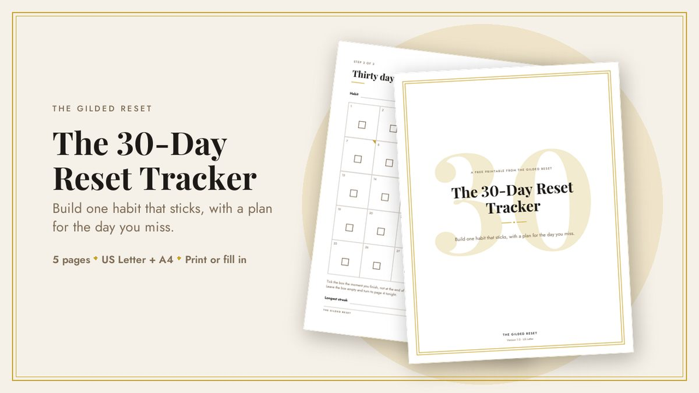
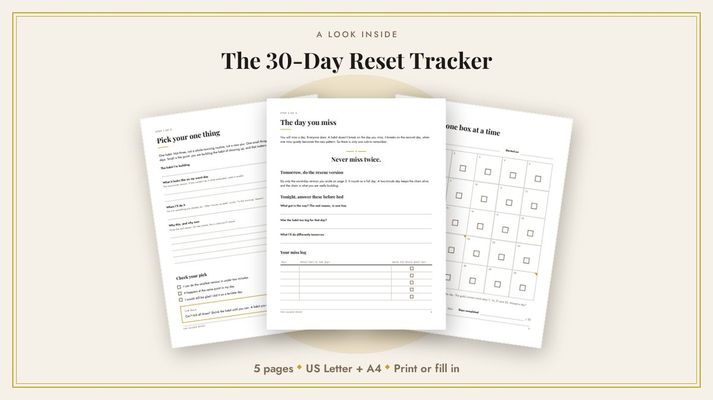

Free printable
Build one habit that sticks.
Thirty days, one box a day, and a page for the day you miss, because you will. Free, and yours to print as often as you like.
5 pages · US Letter and A4 · Print it or fill it in on your device

Where should I send it?
Put in your email and the PDF arrives in about a minute. Both paper sizes are in the same download.
TODO: paste your email form here.
Open config/brand.yaml, put the embed snippet from your email tool in site.email_form_html, then run python scripts/build_site.py again.
Until then this button sends people straight to the free download: Download the tracker
No spam. One click unsubscribes you, and your address is never shared.
What’s inside
Pick your one thing
A page that makes you choose one habit and shrink it until you could still do it on your worst day. One, not ten.
Thirty days, one box at a time
Big, high-contrast boxes you can read across the room. Gold corners mark days 7, 14, 21 and 30.
The day you miss
The page nobody else gives you: three questions for the evening you slip, and the rescue version to run tomorrow so the chain survives.
A look inside

Why a tracker with a recovery page?
A habit doesn’t break on the day you miss it. It breaks on the second day, when one miss quietly becomes the new pattern. Almost every tracker ignores this and quietly assumes a perfect month.
So this one has a single rule, never miss twice, and a page that tells you exactly what to do the first time you do. It takes five minutes and it is the reason people are still ticking boxes in week four.
Questions
What exactly do I get?
Do I have to print it?
Which size should I choose?
What happens to my email address?
It takes ten minutes to set up.
Print it tonight. Start tomorrow morning.